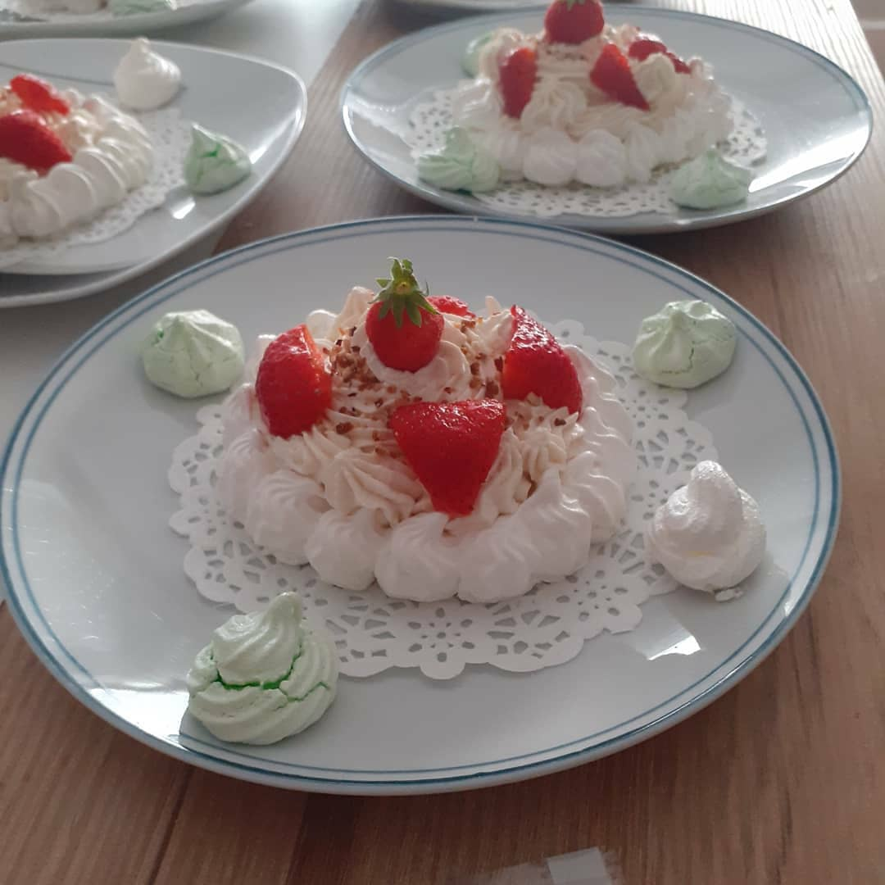

Pavlova

Temps de préparation: 20 minutes
Temps de cuisson: 60 minutes
Difficulté: Facile
Pour 4-6 personnes (diamètre 20 cm):
Préparation:
Temps de cuisson: 60 minutes
Difficulté: Facile
Pour 4-6 personnes (diamètre 20 cm):
-
Ingrédients:
- 4 blancs d’œufs
- 100 g de sucre en poudre
- 100 g de sucre glace
-
- Pour la compotée:
- 150 g de fruits (selon vos goûts congelés ou pas)
- 70 g de sucre semoule
-
- Pour la garniture:
- 20 cl de crème entière
- 1 cuillère à soupe de mascarpone
- 1 cuillère à soupe de sucre glace
- 1 gousse de vanille
Préparation:
-
Réalisation de la compotée de fruits rouges:
- Dans une casserole, faire chauffer les fruits avec le sucre. Faire bouillir quelques secondes en mélangeant au fouet. Laissez refroidir et placez au frigo. Réalisation de la meringue:
- Préchauffez le four à 90°C. Montez les blancs en neige au batteur électrique en ajoutant le sucre en poudre petit à petit tout en continuant à fouetter jusqu'à ce que les blancs meringués soient fermes, lisses et brillants. Faire de même avec le sucre glace.
- Chemisez une plaque de cuisson de papier cuisson.
- Mettre la meringue dans une poche à douille munie d'une douille lisse et pocher des petits tas de meringue les uns contre les autres. Puis, former un cercle de 20 cm.(Vous pouvez également doubler la hauteur)
- Enfournez pour 60 minutes.
- Pendant ce temps, montez la crème liquide en chantilly avec les graines de la gousse de vanille puis le mascarpone et le sucre glace. Réservez au frais.
- Montage de la pavlova Récupérez la meringue cuite. Etalez sur le dessus de la compotée de fruits rouges. Pochez la chantilly vanillée par dessus et décorez avec quelques fruits.( A conserver, dans un endroit sec et frais).